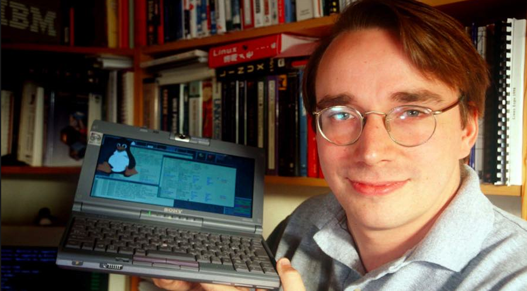

Tribute Page to Linus Torvald the Founder of Linux

Linus Torvalds started his interestes in computers at the age of 11 with the Commodore VIC-20. He initially started programming in BASIC, but later started using machine code to acess the commondore 6502 CPU.
Torvalds attended the University of Helsinki between 1988 and 1996. He took a break from school to do his 11 mounth officers training. He then restarted his univeristy studies in the 1990. Thats when he was introduce to unix for the first time, in the form of a DEC MicroVAX running ULTRIX.
40 percent of the top ten million websites are using linux as of June 13, 2018. Google Chrome OS and Android are using the linux kernel. Thousands of people contribute to the Linux kernel. Now Linus Torvald contribution these days is marging code written by others into Linux Kernel.
Torvalds attended the University of Helsinki between 1988 and 1996. He took a break from school to do his 11 mounth officers training. He then restarted his univeristy studies in the 1990. Thats when he was introduce to unix for the first time, in the form of a DEC MicroVAX running ULTRIX.
40 percent of the top ten million websites are using linux as of June 13, 2018. Google Chrome OS and Android are using the linux kernel. Thousands of people contribute to the Linux kernel. Now Linus Torvald contribution these days is marging code written by others into Linux Kernel.
Here is some of the awards he receive.
- 1991 The first prototype of Linux Kernel went public
- 1994 Linux Kernel 1.0 released.
- 1995 Running Linux on AlphaStation
- 1996 Asteriod 9793 was named after him
- 1997 He Recieved his master's degree from University of Helsinki.
- 1998 Recieved the EFF Pioneer Award
- 2000 awarded the Lovelace Medal from the British Computer Society.
- 2001 He shared the Takeda Award for Social/Economic Well-Being with Richard Stallman and Ken Sakamura.
- 2005 He recieved the Vollum Award from Reed College.
- 2008 He was inducted into the Hall of Fellows of the Computer History Museum in Mountain View, California.
- 2010 He awarded the C&C Prize by the NEC Corporation.
- 2012 One of two winners of the your's Millennium Technology Prize.
- 2012 He was indectuees into the Internet Hall of Fame.
- 2014 Torvalds a recipient of the IEEE Computer Society's Computer Poineer Award.
- 2018 Awared the IEEE Masaru Ibuka Consumer Electronics Award.